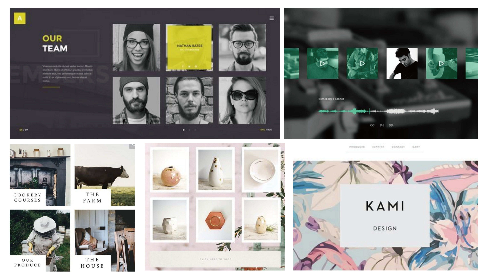
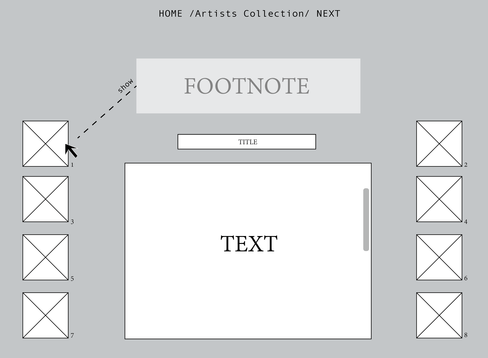

Concept:
My concept is to repurpose and recontextualise content from an existing online publishing source. The topic is about Conceptual art and I choose 3 related texts to introduce 3 conceptual artists. The footnote of the image will appear on the both sides of the page.The images are the squares and also black and white, when the cursor goes through the image, the opacity will change from 0.5 to 1. The footnote of the text will show on the tope of the page. For the body text, it used fixed position to put it on the center of the page and The body text is added scrollbars. Then the cursor on the title, there will be a background-image on the body text. I will develop the background on each of the articles, but the structure of the 3 articles will be similar.
Inspiration:

Mock up:
